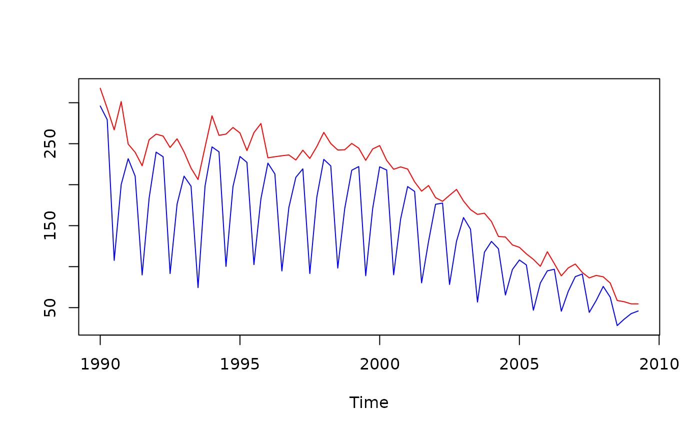
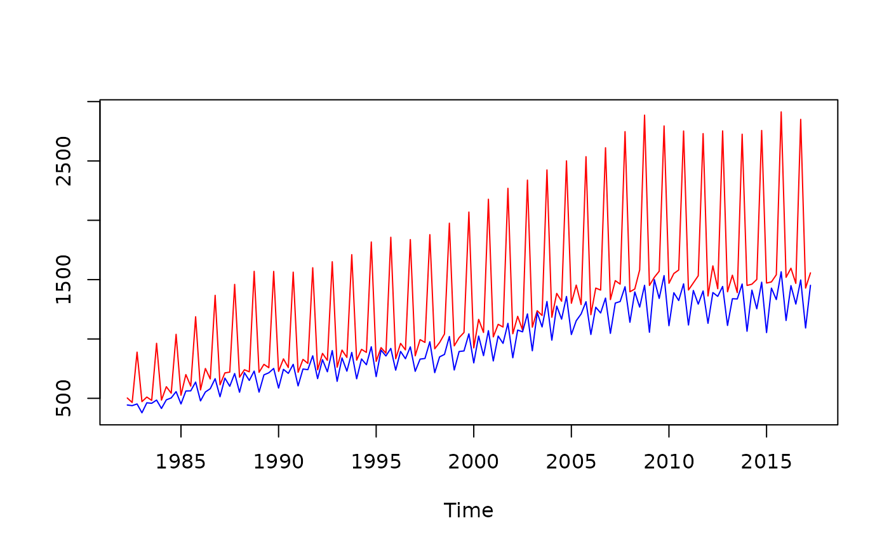

These functions are deprecated and are kept only for backward compatibility. Users should use the corresponding non-deprecated functions instead:
spreadsheet_to_id()\(\to\)spreadsheet_properties_to_id()spreadsheet_id_properties()\(\to\)spreadsheet_id_to_properties()txt_to_id()\(\to\)txt_properties_to_id()txt_id_properties()\(\to\)txt_id_to_properties()xml_to_id()\(\to\)xml_properties_to_id()xml_id_properties()\(\to\)xml_id_to_properties()
Usage
spreadsheet_to_id(props)
spreadsheet_id_properties(id)
txt_to_id(props)
txt_id_properties(id)
xml_to_id(props)
xml_id_properties(id)Value
The same value as returned by the corresponding non-deprecated function. The returned object represents an encoded identifier for a spreadsheet series or collection.
The same output as spreadsheet_id_to_properties.
It is a list with the elements of the identifier: file, sheet, series, and gathering
(which contains period, aggregation, partialAggregation, and cleanMissing flags).
The same output as txt_properties_to_id(): a string representing the internal identifier.
The same output as txt_id_to_properties(): a list with the elements of the id (file, series, format, gathering, etc.).
Returns the same output as xml_properties_to_id(): an internal identifier corresponding to the XML properties.
Returns the same output as xml_id_to_properties(): a list of the XML identifier’s properties (file, collection[, series], charset, fullNames).
Examples
# \donttest{
# Deprecated: use spreadsheet_properties_to_id() instead
set_spreadsheet_paths(system.file("extdata", package = "rjd3providers"))
xls_s1_3 <- spreadsheet_series("Insee.xlsx", 1, 3)
id<-xls_s1_3$moniker$id
source<-spreadsheet_name()
# props<-spreadsheet_id_properties(xls_s1_3$moniker$id) # DEPRECATED
props<-spreadsheet_id_to_properties(xls_s1_3$moniker$id) # RECOMMENDED
props$gathering$period<-4
props$gathering$aggregation<-"Max"
# M<-rjd3toolkit::to_ts(spreadsheet_name(),
# spreadsheet_to_id(props))
M<-rjd3toolkit::to_ts(spreadsheet_name(), # DEPRECATED
spreadsheet_properties_to_id(props)) # RECOMMENDED
props$gathering$aggregation<-"Min"
# m<-rjd3toolkit::to_ts(spreadsheet_name(),
# spreadsheet_to_id(props)) # DEPRECATED
m<-rjd3toolkit::to_ts(spreadsheet_name(),
spreadsheet_properties_to_id(props)) # RECOMMENDED
ts.plot(ts.union(M$data,m$data), col=c("red", "blue"))

# }
# \donttest{
# Deprecated: use spreadsheet_id_to_properties() instead
set_spreadsheet_paths(system.file("extdata", package = "rjd3providers"))
xls_s1_3 <- spreadsheet_series("Insee.xlsx", 1, 3)
id<-xls_s1_3$moniker$id
# print(spreadsheet_id_properties(id)) # DEPRECATED
print(spreadsheet_id_to_properties(id)) # RECOMMENDED
#> $file
#> [1] "Insee.xlsx"
#>
#> $sheet
#> [1] "FRANCE Textile"
#>
#> $series
#> [1] "Préparation de fibres textiles et filature 001563401"
#>
#> $gathering
#> $gathering$period
#> [1] -1
#>
#> $gathering$aggregation
#> [1] "None"
#>
#> $gathering$partialAggregation
#> [1] FALSE
#>
#> $gathering$cleanMissing
#> [1] TRUE
#>
#>
# }
# \donttest{
# Deprecated: use txt_properties_to_id() instead
set_txt_paths(system.file("extdata", package = "rjd3providers"))
txt_15 <- txt_series("ABS.csv", series = 15, delimiter = "COMMA")
id<-txt_15$moniker$id
source<-txt_name()
# props<-txt_id_properties(id) # DEPRECATED
props<-txt_id_to_properties(id) # RECOMMENDED
props$gathering$period<-4
props$gathering$aggregation<-"Max"
# M<-rjd3toolkit::to_ts(txt_name(), txt_to_id(props)) # DEPRECATED
M<-rjd3toolkit::to_ts(txt_name(), txt_properties_to_id(props)) # RECOMMENDED
props$gathering$aggregation<-"Min"
# m<-rjd3toolkit::to_ts(txt_name(), txt_to_id(props)) # DEPRECATED
m<-rjd3toolkit::to_ts(txt_name(), txt_properties_to_id(props)) # RECOMMENDED
ts.plot(ts.union(M$data,m$data), col=c("red", "blue"))

# }
# \donttest{
# Deprecated: use txt_id_to_properties() instead
set_txt_paths(system.file("extdata", package = "rjd3providers"))
txt_15 <- txt_series("ABS.csv", series = 15, delimiter = "COMMA")
id<-txt_15$moniker$id
# print(txt_id_properties(id)) # DEPRECATED
print(txt_id_to_properties(id)) # RECOMMENDED
#> $file
#> [1] "ABS.csv"
#>
#> $delimiter
#> [1] "COMMA"
#>
#> $textQualifier
#> [1] "NONE"
#>
#> $headers
#> [1] 1
#>
#> $skipLines
#> [1] 0
#>
#> $series
#> [1] 15
#>
#> $gathering
#> $gathering$period
#> [1] -1
#>
#> $gathering$aggregation
#> [1] "None"
#>
#> $gathering$partialAggregation
#> [1] FALSE
#>
#> $gathering$cleanMissing
#> [1] TRUE
#>
#>
#> $format
#> $format$locale
#> [1] "en"
#>
#> $format$datePattern
#> [1] "yyyy-MM-dd"
#>
#> $format$numberPattern
#> [1] ""
#>
#> $format$ignoreNumberGrouping
#> [1] TRUE
#>
#>
# }
# \donttest{
# Deprecated: use xml_properties_to_id() instead
set_xml_paths(system.file("extdata", package = "rjd3providers"))
xml_1_5 <- xml_series("Prod.xml", 1, 5, charset = "iso-8859-1")
# q <- xml_id_properties(xml_1_5$moniker$id) # DEPRECATED
q <- xml_id_to_properties(xml_1_5$moniker$id) # RECOMMENDED
q$series <- 50
# xml_to_id(q) # DEPRECATED
xml_properties_to_id(q) # RECOMMENDED
#> [1] "demetra://tsprovider/Xml/20111201/SERIES?charset=ISO-8859-1&file=Prod.xml#collectionIndex=0&seriesIndex=49"
# }
# \donttest{
# Deprecated: use xml_id_to_properties() instead
set_xml_paths(system.file("extdata", package = "rjd3providers"))
xml_1_5 <- xml_series("Prod.xml", 1, 5, charset = "iso-8859-1")
# xml_id_properties(xml_1_5$moniker$id) # DEPRECATED
xml_id_to_properties(xml_1_5$moniker$id) # RECOMMENDED
#> $file
#> [1] "Prod.xml"
#>
#> $charset
#> [1] "ISO-8859-1"
#>
#> $collection
#> [1] 1
#>
#> $series
#> [1] 5
#>
xml_1 <- xml_data("Prod.xml", 1, charset = "iso-8859-1")
# xml_id_properties(xml_1$moniker$id) # DEPRECATED
xml_id_to_properties(xml_1$moniker$id) # RECOMMENDED
#> $file
#> [1] "Prod.xml"
#>
#> $charset
#> [1] "ISO-8859-1"
#>
#> $collection
#> [1] 1
#>
#> $series
#> numeric(0)
#>
# }